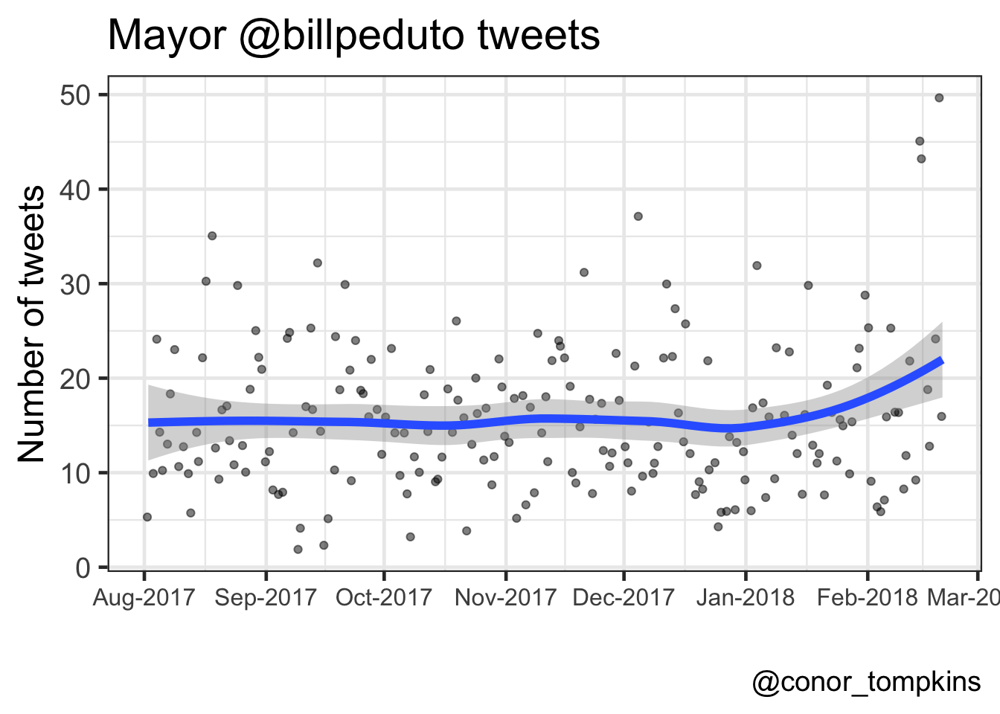
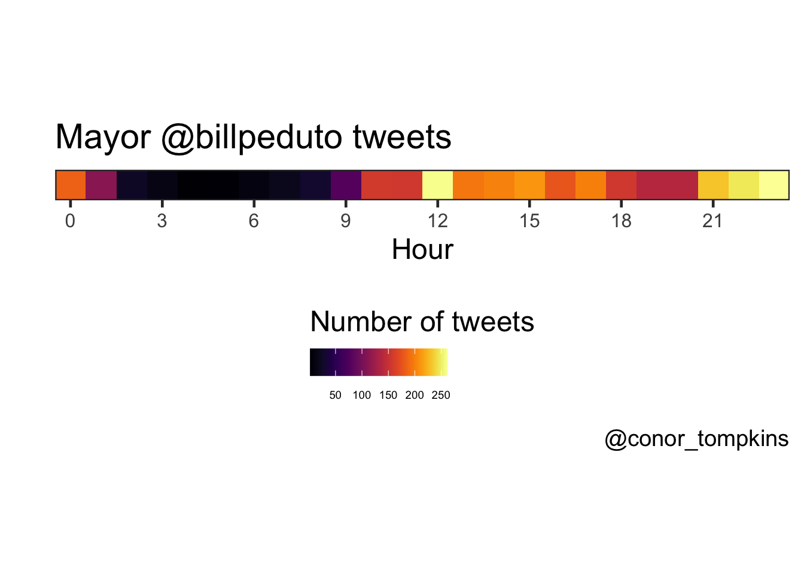
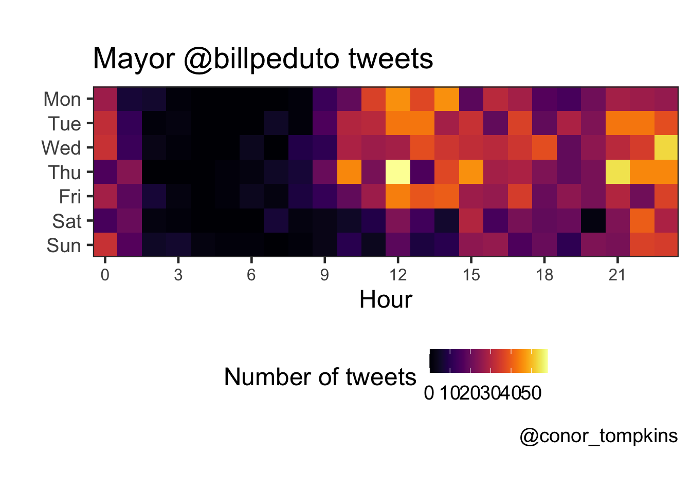
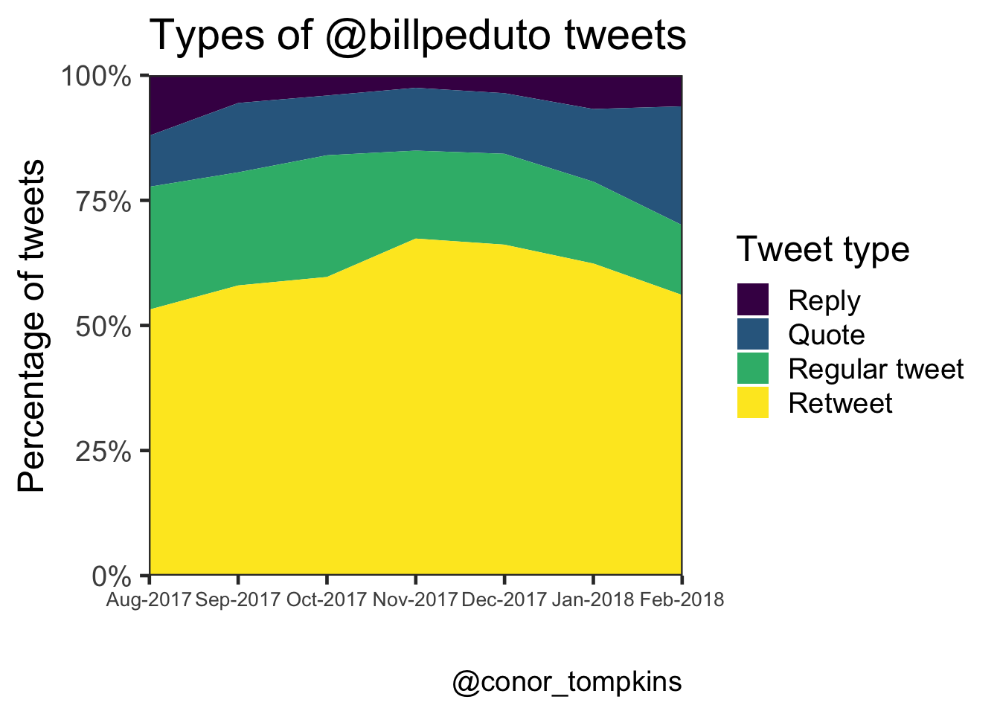
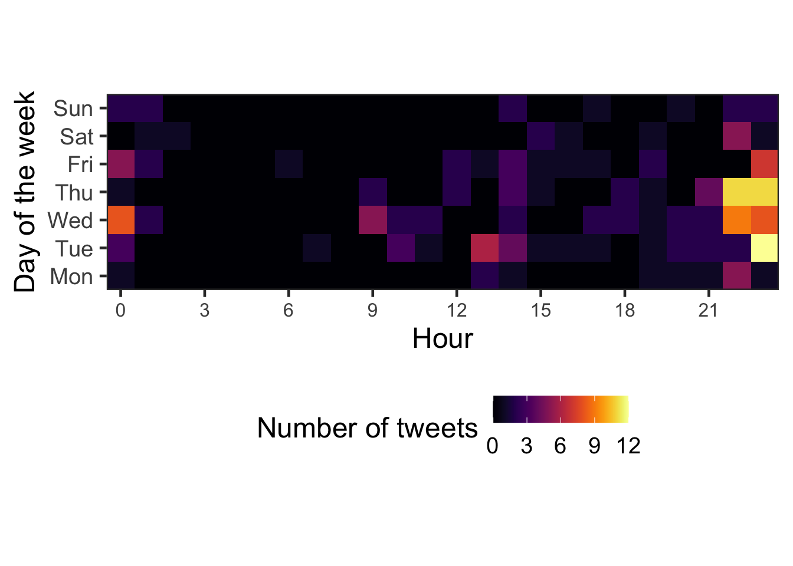
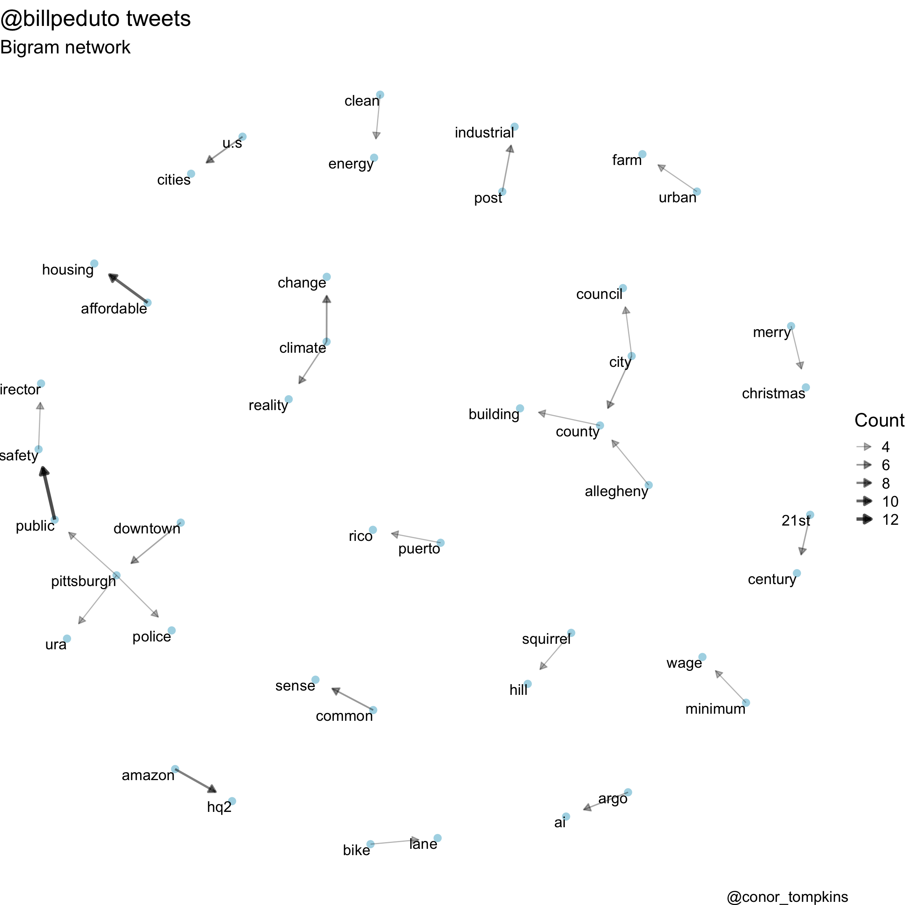
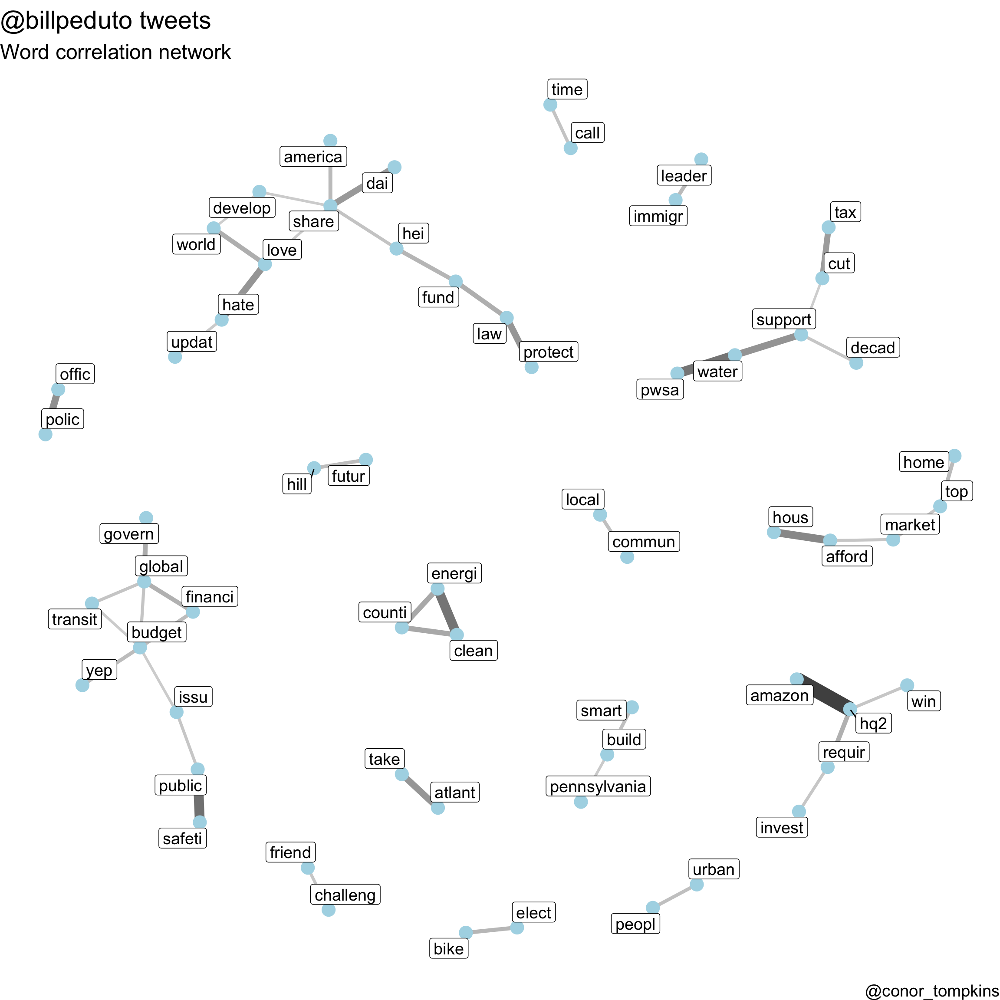

library(tidyverse)
library(tidytext)
library(ggraph)
library(igraph)
library(widyr)
library(SnowballC)
library(lubridate)
library(viridis)
library(scales)
library(knitr)
library(kableExtra)Pittsburgh Mayor Bill Peduto uses Twitter to communicate with his constituents, express his political opinions, and comment about Pittsburgh sports. I will use various R packages (mainly the Tidyverse, Tidytext, and rtweet) to analyze how the Mayor uses Twitter.
Before getting started, we need to load the packages required for this analysis:
First, we will download @billpeduto’s recent tweets using rtweet
rtweet::tweets_bill <- get_timelines("BillPeduto", n = 3200)I have already downloaded the data, so I will load it from my GitHub repo. I will also do some data munging to make the data easier to work with.
url <- "https://raw.githubusercontent.com/conorotompkins/pittsburgh_twitter/master/data/df_billpeduto.csv"
read_csv(url) %>%
mutate(created_at = with_tz(created_at, "US/Eastern"),
date = ymd(str_sub(created_at, 1, 10)),
year = year(date),
month = month(date, label = TRUE),
week = week(date),
wday = wday(date, label = TRUE),
hour = hour(created_at),
month_year = str_c(month, year, sep = "-"),
month_year = factor(month_year, levels = unique(month_year)),
wday = factor(wday, levels = c("Mon", "Tue", "Wed", "Thu", "Fri", "Sat", "Sun"))) -> df_bill
df_bill[1:5, 1:5] %>%
kable("html") %>%
kable_styling()| status_id | created_at | source | is_quote | is_retweet |
|---|---|---|---|---|
| x892785891055468548 | 2017-08-02 12:35:18 | Twitter for iPhone | FALSE | TRUE |
| x892804872390795264 | 2017-08-02 13:50:43 | Twitter for iPhone | FALSE | TRUE |
| x892820785823404032 | 2017-08-02 14:53:57 | Twitter for iPhone | FALSE | TRUE |
| x892926762933506048 | 2017-08-02 21:55:04 | Twitter for iPhone | FALSE | TRUE |
| x892953788679692288 | 2017-08-02 23:42:28 | Twitter for iPhone | FALSE | FALSE |
Exploratory Analysis
This plot shows that the Mayor tweets about 15 times a day, though there is considerable daily variation.
df_bill %>%
count(date) %>%
ggplot(aes(date, n)) +
geom_jitter(alpha = .5) +
geom_smooth(size = 2) +
scale_x_date(date_breaks = "month",
date_labels = "%b-%Y") +
labs(title = title,
x = "",
y = "Number of tweets",
caption = caption)
The Mayor tweets the most on weekdays; Tuesday has the highest median number of tweets. The weekends see fewer tweets, and Saturday and Sunday are very similar.
df_bill %>%
count(wday, date) %>%
group_by(wday) %>%
mutate(median = median(n)) %>%
ggplot(aes(wday, n, color = wday)) +
geom_jitter(alpha = .3, width = .2) +
geom_point(aes(wday, median), size = 5) +
scale_color_viridis(name = "Day of the week", discrete = TRUE) +
labs(title = title,
subtitle = "One small dot = one day, large dot = median for weekday",
x = "",
y = "Number of tweets in a given day",
caption = caption)
The Mayor does most of his tweeting around lunchtime and in the late evening.
df_bill %>%
count(hour) %>%
ggplot(aes(hour, y = 1, fill = n)) +
geom_tile() +
coord_equal() +
scale_y_continuous(expand = c(0,0)) +
scale_x_continuous(expand = c(0,0),
breaks = seq(0, 23, by = 3)) +
scale_fill_viridis(name = "Number of tweets",
option = 3) +
guides(fill = guide_colorbar(title.position = "top")) +
labs(title = title,
x = "Hour",
y = "",
caption = caption) +
theme(axis.text.y = element_blank(),
axis.ticks.y = element_blank(),
legend.position = "bottom",
legend.text = element_text(size = 7))
This view combines the day of the week and hour variables, and confirms what we observed when looking at the variables independently.
df_bill %>%
mutate(wday = factor(wday, levels = rev(levels(df_bill$wday)))) %>%
count(wday, hour) %>%
complete(wday, hour = 0:23) %>%
replace_na(list(n = 0)) %>%
ggplot(aes(hour, wday, fill = n)) +
geom_tile() +
coord_equal() +
scale_x_continuous(expand = c(0,0),
breaks = seq(0, 24, by = 3)) +
scale_y_discrete(expand = c(0,0)) +
scale_fill_viridis(option = 3) +
labs(title = title,
x = "Hour",
y = "",
caption = caption) +
guides(fill = guide_colorbar("Number of tweets")) +
theme(legend.position = "bottom")
This plot shows the percentage of the Mayor’s tweets that are regular tweets, retweets, quotes, and replies.
df_bill %>%
select(date, month_year, month, week, is_retweet, is_quote, reply_to_screen_name) %>%
mutate(tweet_type = case_when(is.na(reply_to_screen_name) == FALSE ~ "Reply",
is_retweet == FALSE & is_quote == FALSE ~ "Regular tweet",
is_retweet == TRUE ~ "Retweet",
is_quote == TRUE ~ "Quote")) -> df_bill_tweet_types
df_bill_tweet_types %>%
count(month_year, tweet_type) %>%
mutate(tweet_type = factor(tweet_type, levels = rev(c("Retweet", "Regular tweet", "Quote", "Reply")))) -> df_bill_tweet_types_month_year
df_bill_tweet_types_month_year %>%
ggplot(aes(month_year, n, fill = tweet_type, group = tweet_type)) +
geom_area(position = "fill") +
scale_fill_viridis(name = "Tweet type", discrete = TRUE) +
scale_x_discrete(expand = c(0,0)) +
scale_y_continuous(expand = c(0,0), labels = scales::percent) +
labs(title = "Types of @billpeduto tweets",
x = "",
y = "Percentage of tweets",
caption = caption) +
theme(axis.text.x = element_text(size = 10))
This heatmap shows that the Mayor replies to tweets most often in the late evening.
df_bill %>%
filter(!is.na(reply_to_screen_name), is_quote == FALSE, is_retweet == FALSE) %>%
count(wday, hour) %>%
complete(wday, hour = 0:23) %>%
replace_na(list(n = 0)) %>%
ggplot(aes(hour, wday, fill = n)) +
geom_tile() +
coord_equal() +
scale_x_continuous(expand = c(0,0),
breaks = seq(0, 24, by = 3)) +
scale_y_discrete(expand = c(0,0)) +
scale_fill_viridis(option = 3) +
labs(x = "Hour",
y = "Day of the week") +
guides(fill = guide_colorbar("Number of tweets")) +
theme(legend.position = "bottom")
Text Analysis
The R package Tidytext makes it very easy to parse text data and pull insights from it. It interfaces very easily with ggraph, which creates network graphs.
set.seed(1234)
df_bill <- read_csv("https://raw.githubusercontent.com/conorotompkins/pittsburgh_twitter/master/data/bill_peduto_tweets.tweets.csv")By separating the Mayor’s tweets into bigrams (two-word chunks), we can identify which words are used together. This code cuts the tweets into bigrams and counts their occurences. I exclude retweets and quotes from this analysis.
count_twitter_bigrams <- function(dataset, custom_stopwords) {
replace_reg <- "https://t.co/[A-Za-z\\d]+|http://[A-Za-z\\d]+|&|<|>|RT|https|'s"
dataset %>%
filter(is_quote == FALSE, is_retweet == FALSE) %>%
mutate(text = str_replace_all(text, replace_reg, "")) %>%
unnest_tokens(bigram, text, token = "ngrams", n = 2) %>%
separate(bigram, c("word1", "word2"), sep = " ") %>%
filter(!word1 %in% stop_words$word,
!word2 %in% stop_words$word,
!word1 %in% custom_stopwords,
!word2 %in% custom_stopwords) %>%
count(word1, word2, sort = TRUE)
}
bill_stop_words <- c("t.co", "https", "amp")
tweets_bill <- count_twitter_bigrams(df_bill, bill_stop_words)
tweets_bill %>%
rename(count = n) %>%
head() %>%
kable("html") %>%
kable_styling()| word1 | word2 | count |
|---|---|---|
| public | safety | 12 |
| affordable | housing | 10 |
| amazon | hq2 | 8 |
| climate | change | 6 |
| common | sense | 6 |
| u.s | cities | 6 |
This network graph shows which words the Mayor uses together frequently. “public” + “safety”, and “affordable” + “housing” are the main standouts. I think this plot pretty accurately captures the topics the Mayor tweets about.
visualize_bigrams <- function(bigrams, minimum, text_size = 3, title = NULL, subtitle = NULL, caption = NULL) {
set.seed(2016)
a <- grid::arrow(type = "closed",
length = unit(.1, "inches"))
bigrams %>%
filter(n >= minimum) %>%
graph_from_data_frame() %>%
ggraph(layout = "fr") +
geom_node_point(color = "lightblue", size = 3) +
geom_node_text(aes(label = name), size = text_size, vjust = 1, hjust = 1) +
geom_edge_link(aes(edge_alpha = n, edge_width = n), show.legend = TRUE, arrow = a, end_cap = circle(.25, 'inches')) +
scale_edge_width_continuous("Count", range = c(.5, 1.5)) +
scale_edge_alpha_continuous("Count", range = c(.3, .7)) +
labs(title = title,
subtitle = subtitle,
caption = caption) +
theme_void(base_size = 18)
}
visualize_bigrams(tweets_bill,
minimum = 4,
text_size = 5,
title = "@billpeduto tweets",
subtitle = "Bigram network",
caption = caption)
This code determines which words are correlated with each other:
word_correlations <- function(dataframe, minimum, custom_stopwords){
replace_reg <- "https://t.co/[A-Za-z\\d]+|http://[A-Za-z\\d]+|&|<|>|RT|https"
unnest_reg <- "([^A-Za-z_\\d#@']|'(?![A-Za-z_\\d#@]))"
dataframe %>%
filter(is_quote == FALSE, is_retweet == FALSE) %>%
select(status_id, text) %>%
mutate(section = row_number() %/% 10) %>%
filter(section > 0) %>%
mutate(text = str_replace_all(text, replace_reg, "")) %>%
unnest_tokens(word, text, token = "regex", pattern = unnest_reg) %>%
filter(!word %in% stop_words$word,
!word %in% custom_stopwords,
str_detect(word, "[a-z]")) %>%
mutate(word = str_replace(word, "'", ""),
word = str_replace(word, "'", ""),
word = SnowballC::wordStem(word)) %>%
group_by(word) %>%
filter(n() >= minimum) %>%
pairwise_cor(word, section, sort = TRUE)
}
bill_stopwords <- c("t.co", "https", "amp")
bill_words <- word_correlations(df_bill, minimum = 10, custom_stopwords = bill_stopwords)This plot shows which words are correlated highly with each other. Some words are “stemmed” (shortened and/or modified), to capture very similar words. For example, “business” and “businesses” could be stemmed to “busine”.
“amazon” and “hq2” are used together overwhelmingly. The “pwsa” + “water” + “decad” combination indicate the ongoing water quality problems, and the plans to reinvest in the infrastructure. This plot shows how some of the policy issues the Mayor focuses on are connected.
visualize_word_correlations <- function(dataframe, title, subtitle, caption){
dataframe %>%
filter(correlation > .3) %>%
graph_from_data_frame() %>%
ggraph(layout = "fr") +
geom_edge_link(aes(edge_alpha = correlation, edge_width = correlation), show.legend = FALSE) +
geom_node_point(color = "lightblue", size = 5) +
geom_node_label(aes(label = name), size = 5, repel = TRUE) +
scale_edge_alpha_continuous(range = c(.1, .5)) +
theme_void(base_size = 18) +
labs(title = title,
subtitle = subtitle,
caption = caption)
}
visualize_word_correlations(bill_words,
title = "@billpeduto tweets",
subtitle = "Word correlation network",
caption = "@conor_tompkins")
References
- https://github.com/mkearney/rtweet
- http://rtweet.info/
- http://rtweet.info/articles/intro.html
- https://stackoverflow.com/questions/47681690/no-twitter-authorization-prompt-when-using-rtweet-package/48275078#48275078
- https://stackoverflow.com/questions/47910979/setting-up-rtweet-for-r-in-aws-ubuntu-server
- https://github.com/r-lib/httr/issues/156
- https://github.com/mkearney/rtweet/issues/75
- https://github.com/geoffjentry/twitteR/issues/65
- https://github.com/r-lib/httr/blob/master/demo/oauth1-twitter.r